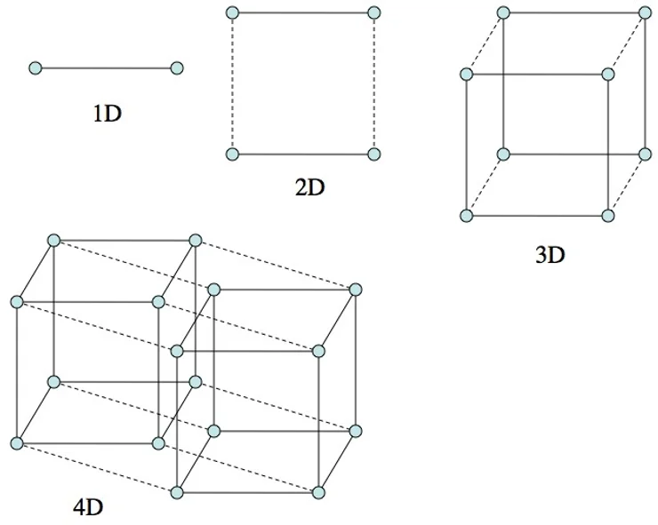
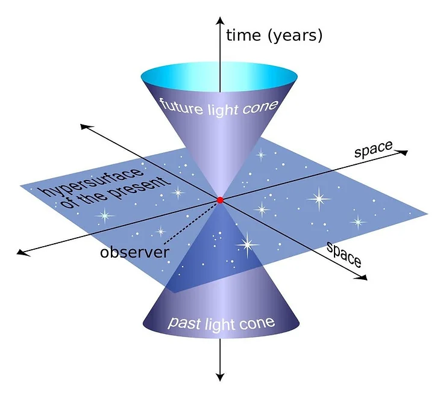

The fourth dimension is a concept in both physics and mathematics that refers to a hypothetical spatial dimension beyond the three dimensions of length, width, and height that we are familiar with. In physics, the fourth dimension plays a crucial role in understanding the behavior of particles and the structure of the universe.

One of the most well-known theories that incorporates the fourth dimension is Einstein's theory of general relativity. According to this theory, gravity is not a force between masses, as previously believed, but rather the result of the warping of space-time caused by the presence of massive objects. In this framework, the fourth dimension represents the curvature of space-time, and gravity can be explained by the bending of this fourth dimension around massive objects like planets and stars.
4D in Physics
Another important area in physics where the fourth dimension is relevant is in the study of subatomic particles. Quantum mechanics describes subatomic particles through wave functions, mathematical tools that represent the probability of finding a particle in a particular location. Some interpretations of quantum mechanics suggest that the fourth dimension may be related to the behavior of these wave functions, potentially explaining quantum phenomena such as entanglement.
In the context of space-time, the fourth dimension is often associated with time. Time is inseparable from the three spatial dimensions in Einstein's theory of relativity, forming a four-dimensional continuum known as space-time. In this view, time is considered the fourth dimension because it cannot be visualized the same way as length, width, and height, but it is essential to understanding the universe's structure. The flow of time is central to our understanding of movement and change within the three spatial dimensions.

4D in Mathematics
In mathematics, the fourth dimension is often explored in geometry and topology. In four-dimensional geometry, shapes and objects possess an additional spatial dimension beyond the familiar three, allowing for the study of new mathematical entities such as the tesseract, the four-dimensional equivalent of a cube. In topology, the fourth dimension is used to study the properties of multi-dimensional spaces and relationships between different shapes and figures.
4D in Other Areas
The concept of the fourth dimension has permeated literature and popular culture, particularly in science fiction. Many stories and novels use the fourth dimension as a tool to explore alternate realities or new possibilities. Additionally, the idea of extra dimensions often serves as a metaphor for examining new ideas and perspectives.
Conclusion
In conclusion, the fourth dimension is a powerful concept with wide-ranging applications in physics, mathematics, and beyond. It helps explain phenomena like gravity and quantum mechanics while also serving as a tool for exploring new worlds and ideas in literature. As our understanding of the universe expands, so too does our grasp of the fourth dimension and its potential significance.
References
- Einstein, A. (1915). "The field equations of gravitation". Sitzungsberichte der Königlich Preussischen Akademie der Wissenschaften zu Berlin, part 1: 844–847.
- Hawking, S. (1988). A Brief History of Time: From the Big Bang to Black Holes. Bantam.
- Penrose, R. (1989). The Emperor's New Mind: Concerning Computers, Minds, and the Laws of Physics. Oxford University Press.
- Coxeter, H. S. M. (1954). "Regular polytopes, (3rd edition)", Dover edition, ISBN 0-486-61480-8
- Visualizing the Fourth Dimension
- Are Wormholes Real?
- This Is Why Time Has to Be a Dimension